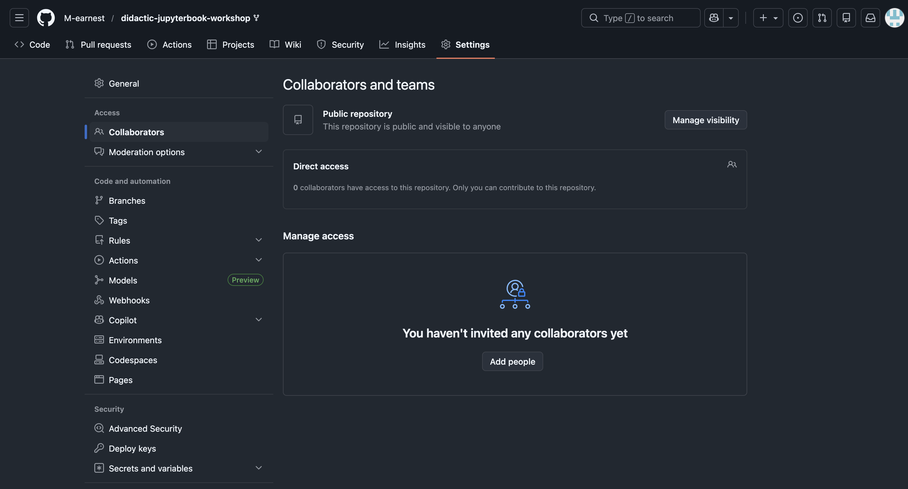
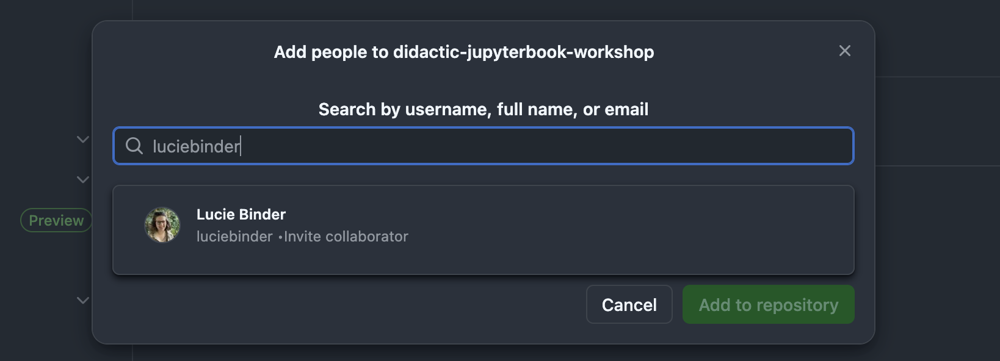

Working Collaboratively#
To demonstrate how you can work collaboratively using GitHub and Jupyter Book, we can perform a somewhat useful exercise.
There are two ways to go about this: either you invite someone as a collaborator and give them access to your course repository, or via forking (link) a repository to create your own version, making changes and asking the original owner hwether they would like to accept your changes via a s- called “pull request”. We will go through both options in detail below.
1. Adding Collaborators.#
First, please, find a partner and invite each other as collaborators to your respective repos. This will allow you to have access to each other’s repo and, given a specific role, you may modify the contents or structure of the repository. You can do so by navigating to the settings -> collaborators page of your repo and simply selecting Add people.
img collabs

Search for people via their GitHub Username, Email, etc., and click Add to repository.

Now simply wait for them to accept your invite.
1.2
Once they have done so, you can click the pencil icon net to their name and assigne roles/rights. In general only the owner of the repo will have all possible rights, e.g. the right to delete the repository. To allow others to create and modify the content of your repo, you will have to give them “write” access. Here are some common roles/rights associated with certain collaborative positions.
Role |
Best For… |
Can Push Code? |
Can Merge PRs? |
Can Delete Repo? |
|---|---|---|---|---|
Read |
Non-code contributors, auditors |
No |
No |
No |
Triage |
Project managers, issue triagers |
No |
No |
No |
Write |
Standard developers |
Yes |
Yes |
No |
Maintain |
Project leads |
Yes |
Yes |
No |
Admin |
Owners/Co-founders |
Yes |
Yes |
Yes |
1.3 Working with collaboratos
As collaboratos have full access to the repository and should have write access by now, you can simply select one of the files and start making changes or create new files for your contributions.
Navigate to the “general information” folder of your partners repository. Click “Add file”, give your contribution a name and make sure it ends with .md (so that GitHub knows we want a markdown formatted file).
img create_file
Now simply add a header, do so by declaring the first line of the document as the title via the use of a single hash, e.g. your title could be
Notes and tricks#
Note that this will be rendered as the title of the newly created webpage in the table of contents on your rendered website. To actually make this visible we are still missing one final step, though. So add some notes or a friendly message to your partner and click “commoit changes” in the upper right hand corner.
In the commit view add an informative title and describe the changes you have made in as much detail as necessary.
img commit_file
To make the newly created content appear on the website, we have to add the new file to our toc.yml. Jump back into the Creating OER tutorial to recall how to do this.
Once you have committed the changes to the toc.yml, you can check the actions workflows and following, the course website to view your rendered contributions.
So congratulations, you now know how to leverage the central hub of the global software development economy to manage your own projects! You can now effectively declare that you are using the “gold standard” frameworks of the tech industry for collaborative coding and software project management.
1.4 A Safety Net: Working with Branches
While editing files directly on the main page works, it comes with a risk. Imagine if you and your partner both try to rewrite the introduction chapter at the exact same time. Who wins? Usually, this will result in one of two things, either the last person to click “Commit” overwrites the other person’s work, or GitHub declares a “conflict”.
To avoid this chaos, developers use Branches.
Think of the main branch (the one you are working on now, check screenshot) as the “published” version of your book. It should always be clean and error-free.
When you want to try a new idea, the standard should be to create a new “branch”, which is like creating your own copy of the project to a separate room to scribble on it safely. If you mess up, you can just throw the copy away without hurting or in any way changing the original files. If you like it, you “merge” it back in.
Here is how to do it in the browser:
Create/Select a Branch: On the main page of the repository, look for the dropdown button on the left that says main. Click it and type a new name for your workspace (e.g., draft-chapter-1). Click Create branch....
img create_branch
Make Changes: You are now working in your own parallel universe! You can edit files, delete things, or add new notes exactly as we did in step 1.3. None of this affects the main view yet.
The Pull Request (Merging): Once you are happy with your edits, you need to tell your partner (and the system) to pull your changes into the main version.
Click the Pull Requests tab at the top.
Click New Pull Request.
Select your branch (draft-chapter-1) to compare it against main.
Click Create Pull Request.
img open_pr
This opens a discussion thread where your partner can review your notes, leave comments, and finally click the Merge button to officially add your work to the project. This review process is essentially the heart of collaborative coding and allows you to have full control over what happens to your course.
Outside collaborators and Independent contributions: Forking & Pull Requests
What if you want to, e.g., contribute to a massive open-source textbook where you don’t know the owners personally? Or you want to invite help from someone outside your core team, e.g., a student from another university or a subject matter expert, without giving them full “Write” access to your repository. Giving every single contributor direct access is risky as they could accidentally delete files, push unfinished drafts to your main branch, or create merge conflicts.
The safest way to contribute or accept contributions from people you don’t fully trust or who you just want to help once) is by ‘forking’ the repository. We have already learned about this in the previous lesson, but for the sake of training, let’s make some changes to a partner’s repository and then ask them to review and accept those changes via a so-called “pull request”.
2.1 The Forking Workflow
A “Fork” is simply a personal copy of your repository that lives under the contributor’s account. They have full freedom to break, fix, or rewrite their copy without affecting your original project at all.
Navigate to your partner’s repository. In the top right corner, they should look for the Fork button.
img fork_button
Once you click it, GitHub creates a clone of their repository under your username. You will see the title PartnerName/YourProjectName with a small label underneath: forked from PartnersName/PartnersProjectName.
2.2 Making Safe Changes
Now that you have your own forked version, you can freely edit files, create branches, and commit changes exactly as if it were your own project.
Now make a small improvement or leave a short message in one of teh copied .md files. Notice that while you are doing this, their original repository remains completely unchanged. This is the safety buffmer forking provides.
2.3 Submitting a Pull Request (PR)
Once you are happy with the changes you made, you can ask the original owner to accept your contributions.
Go to the main page of your forked repository.
Locate the branch history notification (marked in the screenshot below), "This branch is 1 commit ahead of YourName:main."
img branch_notificattions.
Click Contribute and then Open Pull Request.
img contribute_fork
GitHub will show a comparison of the contents of the two changed files and highlight the differences:
Base repository: Their original project.
Head repository: Your forked version.
Now, review that your changes are correct and click Create Pull Request.
Dropdown: Important note on Pull requests
Before you finish your request, take a moment to write a clear title and description. This is not only a common courtesy, but helps establish a well-documented history of changes and contributions. If you find another bug or want to make another contribution while working, don’t do so in the same request. A Pull Request should essentially do one thing well.
Title: Short, clear, and descriptive, e.g. “Add navigation bar” or “Fix typo in README”. Description: Provide context and clearly describe why and which changes you made. You can additionally include screenshots or links to, e.g. your version of their course website to demonstrate that your code works or your changes are correct/meaningful.
Don’t just leave the text box blank. You should explain exactly what you fixed and why you did it. If your changes solve a specific bug, reference it here. Providing this context is essentially the best way to help the maintainer review your work quickly.
2.4 The Maintainer
Now, look over to your partner. Have them go back to their own repository and click the Pull Requests tab. They will see your request listed there.
They can now essentially:
Review: Click on the "Files changed" tab to see exactly what you did (additions are in green, deletions in red).
Discuss: Leave comments on specific lines if they want you to change something essentially (e.g., "Please add a citation here").
Merge: If everything looks good, they click the green Merge Pull Request button.
This “Fork & Pull” model is essential for massive open-source projects like Linux and allows one to manage thousands of strangers working together. I’m certain it will be usefull for your projects as well.